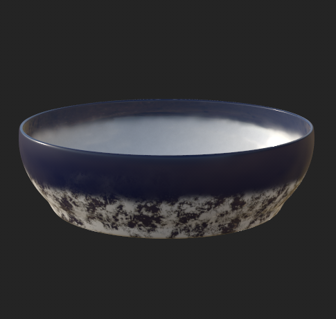
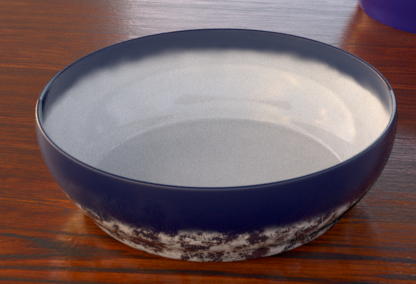
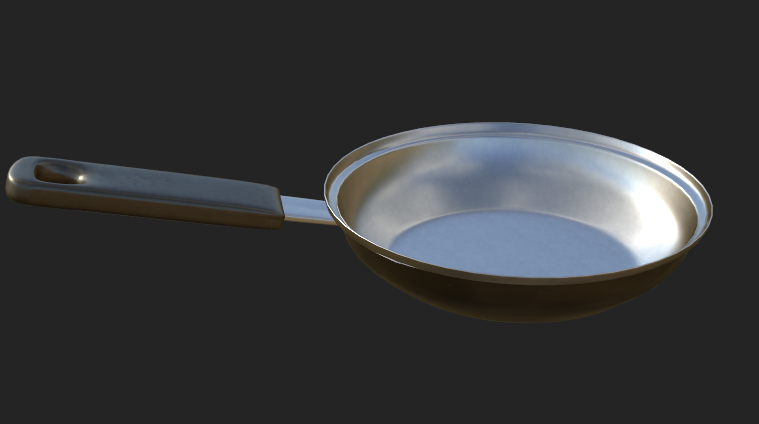
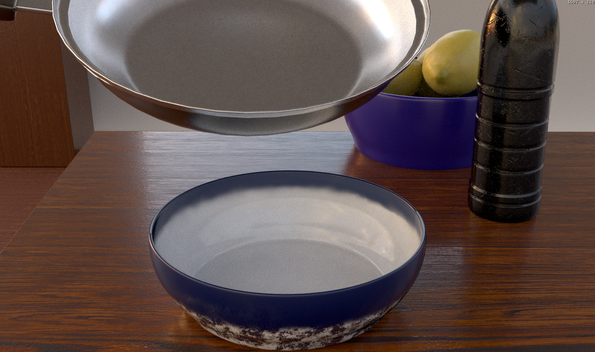
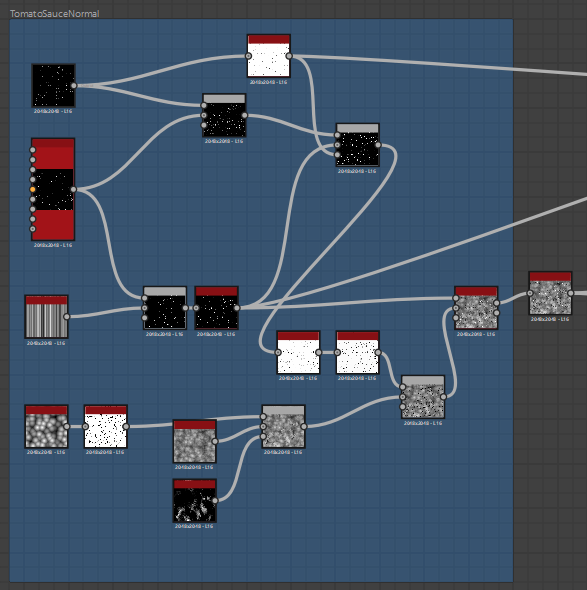
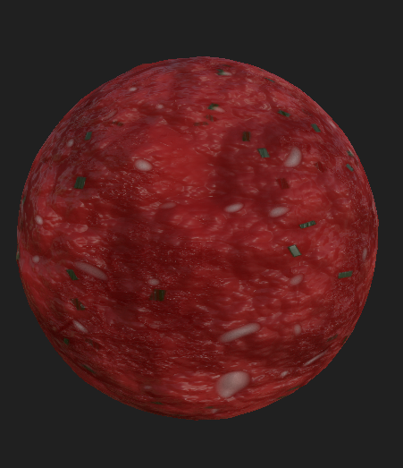
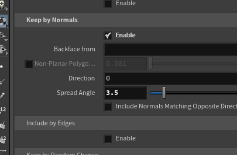
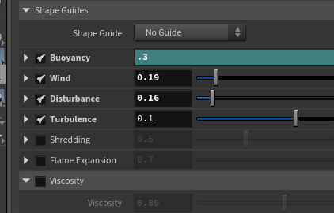

← 部落格 × VSFX728
待辦事項：
外觀開發
Substance Painter
在 Houdini 中測試

Substance Painter
在 Houdini 中測試


改進計畫（暑假期間）：
第 10 週
VSFX 728 － 第 10 週
大家好，這是我 VSFX 728 部落格的期末專案！
5 月 20 日
待辦事項：
1. 繼續測試傾倒特效，讓它更接近參考（我想讓一些番茄醬黏在鍋子上）
2. 為碗裡的番茄醬加上蒸氣
3. 改善外觀開發，尤其是番茄醬，讓它看起來更多汁、更真實
最終成果（5 月 28 日）
拆解（5 月 28 日）
最終測試（特效）
傾倒測試
MPMCollider (Pot):
Friction: 0.2
Sticky: 0.05
MPMCollider (Pot):
Friction: 0.3
Sticky: 0.1
MPMCollider (Pot):
Friction: 0.5
Sticky: 0.5
MPMCollider (Spatulas):
Friction: 2
Sticky: 1
MPMCollider (Pot):
Friction: 0.3
Sticky: 0.5
MPMCollider (Spatulas):
Friction: 0.2
Sticky: 0.05
外觀開發
我用 Substance Painter 製作碗的材質，讓它符合參考。


Substance Painter
在 Houdini 中測試

Substance Painter
在 Houdini 中測試

這是除了番茄醬以外、外觀開發都已完成的場景。
5 月 25 日
番茄醬
我在番茄醬的材質中加入大蒜，並調整顏色以符合參考。


加入蒸氣
我從番茄醬表面選取 primitives，依法線建立群組，再用這個群組作為來源，以 Pyro 產生蒸氣。


5 月 28 日
最後我用 Substance Painter 製作番茄醬的材質，因為它讓我能更好地控制結果。